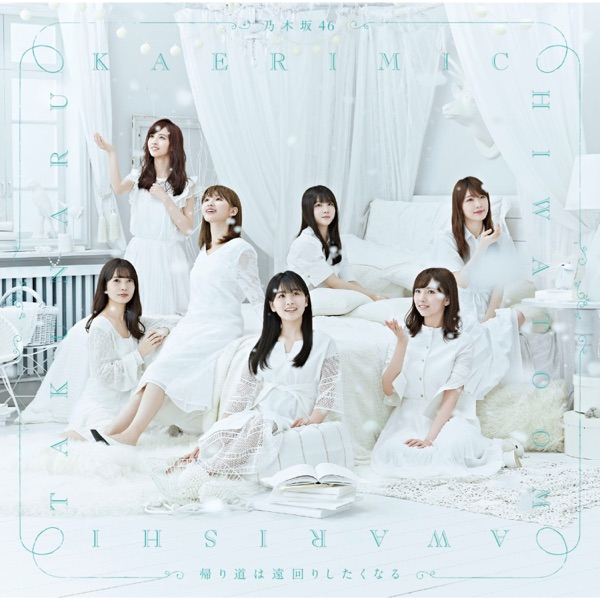

← 楽曲図鑑に戻る

初収録リリース「帰り道は遠回りしたくなる」のジャケット
乃木坂46
発売日：2018-11-14収録：帰り道は遠回りしたくなる（22ndSG）種別：ソロ曲作曲：若田部誠編曲：若田部誠ライブ披露：3件
西野七瀬
帰り道は遠回りしたくなる、キャラバンは眠らない、つづく、日常、告白の順番、ショパンの嘘つき、知りたいこと
← 前の曲「キャラバンは眠らない」次の曲「日常」 →
 サカミチ
サカミチ